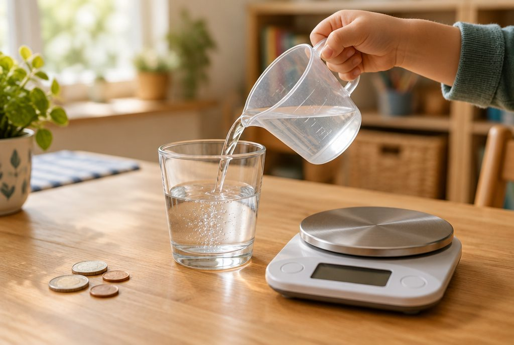

0.01과 0.001, 소수는 어떻게 더하고 뺄까?

100m 달리기 기록이 15.37초, 내 키가 1.36m처럼 소수점 아래 숫자가 두세 개인 수를 본 적 있나요? 오늘은 더 작은 자리까지 있는 소수를 읽고, 비교하고, 더하고 빼 봐요.
0.01과 0.001을 알아봐요
1을 똑같이 100으로 나눈 것 중 하나는 분수로 1/100이고, 소수로 0.01이라고 써요. 읽을 때는 '영 점 영일'이라고 해요.
1을 똑같이 1000으로 나눈 것 중 하나는 1/1000이고, 소수로 0.001이라고 써요. '영 점 영영일'이라고 읽어요. 0.01이 10개 모이면 0.1, 0.001이 10개 모이면 0.01이 돼요.
1/100 = 0.01 (영 점 영일), 37/100 = 0.37 (영 점 삼칠), 1/1000 = 0.001 (영 점 영영일)
소수의 자릿값을 알아봐요
소수점 오른쪽 첫 번째 자리는 소수 첫째 자리, 두 번째는 소수 둘째 자리, 세 번째는 소수 셋째 자리예요. 소수 둘째 자리까지 있는 수를 소수 두 자리 수, 셋째 자리까지 있는 수를 소수 세 자리 수라고 해요.
2.574에서 2는 일의 자리 숫자로 2를, 5는 소수 첫째 자리 숫자로 0.5를, 7은 소수 둘째 자리 숫자로 0.07을, 4는 소수 셋째 자리 숫자로 0.004를 나타내요. 소수점 아래는 숫자를 하나씩 읽어서 '이 점 오칠사'라고 읽어요.
2.574 = 2 + 0.5 + 0.07 + 0.004
소수의 크기를 비교해요
소수의 크기는 자연수 부분부터 비교하고, 같으면 소수 첫째 자리, 그다음 소수 둘째 자리, 소수 셋째 자리 순서로 비교해요. 높은 자리 숫자가 큰 쪽이 더 큰 수예요.
소수는 오른쪽 끝에 0을 붙여도 크기가 같아요. 0.4와 0.40은 같은 수예요. 그래서 0.4와 0.38을 비교할 때 0.40과 0.38로 자릿수를 맞추면 비교하기 쉬워요. 자릿수가 많다고 더 큰 수가 아니라는 점을 꼭 기억해요.
0.4와 0.38 비교 → 0.40과 0.38 → 소수 첫째 자리 4 > 3 → 0.4 > 0.38
이렇게 풀어요: 소수의 덧셈
① 소수점끼리 세로로 맞추어 써요. 자릿수가 다르면 끝에 0을 붙여 자리를 맞춰도 돼요. ② 자연수의 덧셈처럼 오른쪽 자리부터 더하고, 10이 넘으면 바로 윗자리로 받아올려요. ③ 답에 소수점을 그대로 내려 찍어요.
1.35 + 2.48을 해 볼까요? 소수 둘째 자리 5 + 8 = 13이니 3을 쓰고 1을 올려요. 소수 첫째 자리 1 + 3 + 4 = 8, 일의 자리 1 + 2 = 3이에요. 그래서 답은 3.83이에요.
2.7 + 1.56 → 2.70 + 1.56 → 4.26
이렇게 풀어요: 소수의 뺄셈
뺄셈도 소수점을 맞추어 쓰고 오른쪽 자리부터 빼요. 뺄 수 없으면 바로 윗자리에서 받아내림을 해요. 0.1 하나를 받아내리면 0.01이 10개가 돼요.
5.2 − 1.75는 5.20 − 1.75로 바꾸어 계산해요. 소수 둘째 자리는 0에서 5를 뺄 수 없으니 받아내려 10 − 5 = 5, 소수 첫째 자리는 1에서 7을 뺄 수 없으니 다시 받아내려 11 − 7 = 4, 일의 자리 4 − 1 = 3이에요. 답은 3.45이고, 3.45 + 1.75 = 5.2로 검산할 수 있어요.
5.2 − 1.75 = 3.45 (검산: 3.45 + 1.75 = 5.2)
핵심 낱말
- 소수 두 자리 수
- 0.37, 1.25처럼 소수 둘째 자리까지 있는 소수
- 소수 세 자리 수
- 0.125, 2.574처럼 소수 셋째 자리까지 있는 소수
- 소수 둘째 자리
- 소수점 오른쪽 두 번째 자리, 0.01이 몇 개인지 나타내요
- 소수 셋째 자리
- 소수점 오른쪽 세 번째 자리, 0.001이 몇 개인지 나타내요
- 소수점 맞추기
- 소수를 더하거나 뺄 때 소수점을 세로로 같은 줄에 두는 것
한 줄 정리
- 1/100 = 0.01, 1/1000 = 0.001이고, 소수점 아래 자리는 소수 첫째·둘째·셋째 자리예요.
- 소수의 크기는 높은 자리부터 차례로 비교하고, 끝에 0을 붙여 자릿수를 맞추면 쉬워요.
- 소수의 덧셈과 뺄셈은 소수점을 세로로 맞추고 자연수처럼 계산한 뒤 소수점을 내려 찍어요.
학교 교육과정 연결
- [4수01-13] 자릿값의 원리를 바탕으로 소수 두 자리 수와 소수 세 자리 수를 이해하고 읽고 쓸 수 있다.
- [4수01-14] 소수의 크기를 비교하고 그 방법을 설명할 수 있다.
- [4수01-16] 소수 두 자리 수의 범위에서 소수의 덧셈과 뺄셈의 계산 원리를 이해하고 그 계산을 할 수 있다.